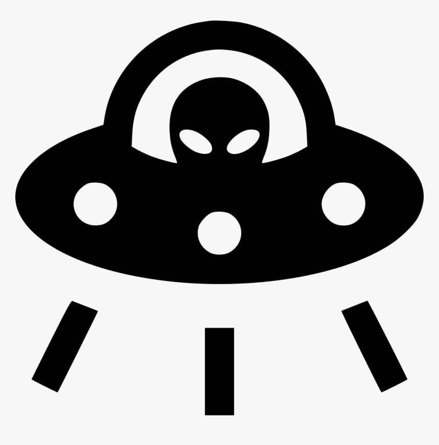
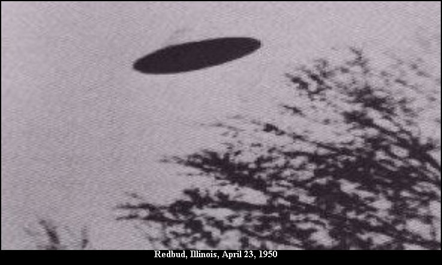
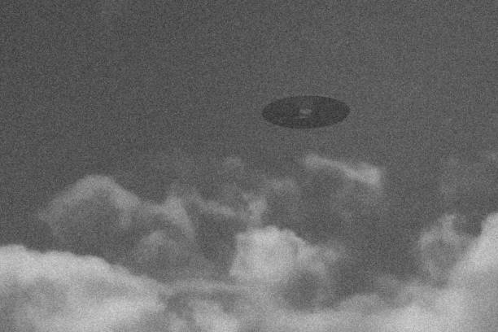
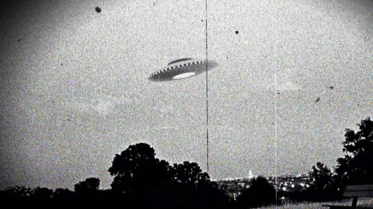

Unidentified Aerial Phenomenon, Detected
Top-down stealth UFO game with isometric 3D rendering. Abduct livestock. Avoid the witness threshold. Don't get classified.
Hornet, Starlight, Greyhound — each with distinct speed, beam range, beam time, and energy economy.
Four-state civilian alert: Idle → Curious → Alarmed → Reporting. Each tier escalates the threat feed rate.
FBI agents on foot and police cruisers (faster, slower-turning) split the spotter pool.
Search beams sweep the airspace. On detect they lock and chase for 10s; ignore watchtowers, rain threat at 16/s.
Hold C to trace concentric rings, 8-fold petals, six-arm spirals. Get spotted mid-lay and the pattern dies.
Vintage UFO photographs slide in from the screen edge whenever a civilian first spots you.
Looped title/beam/ambient music that ducks the moment any civilian sees you. One-shot stings for spotted/escaped/fly-by.
Cow targets, all enemies (color-coded by alert state), the UFO, and the camera viewport — all live in the top-left.
Each clear scales civilian count and flips the map. Run mode (Shift) burns through engine-startup stamina.
In-game stat units are alien jargon: speed in QORG/PYL, range in VEKKS, time in KRN, energy in ZYL.
Rural farmstead inspired by the 1980 sighting. Rendered from assets/farm.glb, top-down projected onto a 3D ground plane.
Section of New York interstate. Long sightlines, sparse cover — cruisers turn it into a chase.
Each tier feeds the threat meter faster. Threat decays at 5/s when no civilian sees you. Hit 100% and the mission is compromised.
Whenever a civilian first spots the UFO, a vintage photograph slides in from the screen edge with a ±7° rotation, holds for 3 seconds, then fades. A small sample of what shows up:



| File | Type | Trigger |
|---|---|---|
| title.mp3 | music (loop) | title screen |
| start.mp3 | one-shot | title → play transition |
| floating.mp3 | music (loop) | play, no eyes on UFO, beam off |
| spotted.mp3 | one-shot | civilian Idle → Curious |
| flyby.mp3 | one-shot | UFO passes near idle civilian unseen |
| beam.mp3 | music (loop) | tractor beam engaged |
| escaped.mp3 | one-shot | last witness loses sight (with threat ≥ 18%) |
| engine.mp3 | one-shot | Shift held — drives run-mode stamina |
| snap.mp3 | one-shot | witness polaroid trigger |
src/main.cThe witness threshold is unforgiving. The herd is patient. Submit your run.
View High Scores → Source on GitHub